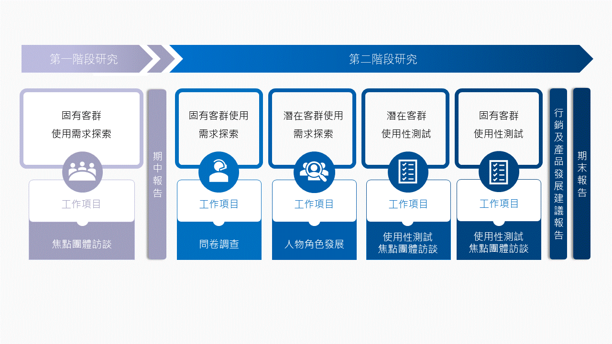
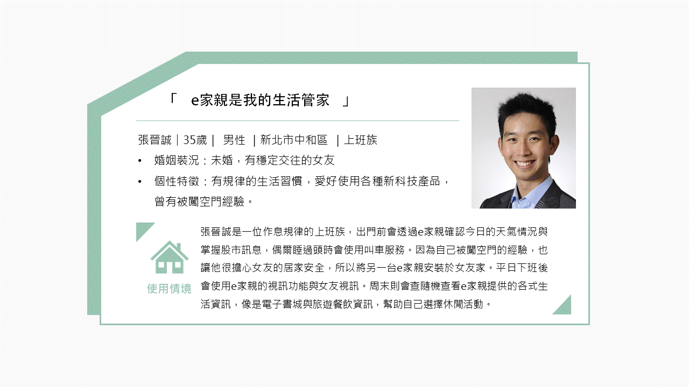
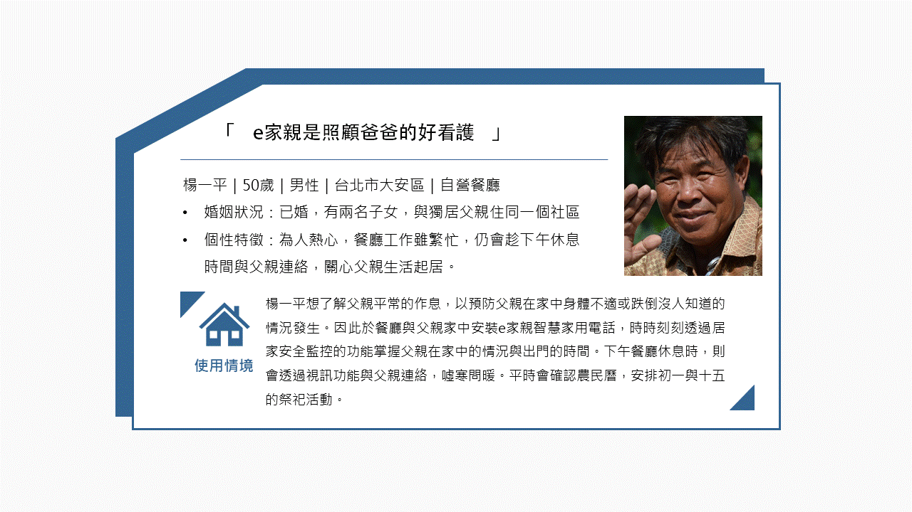
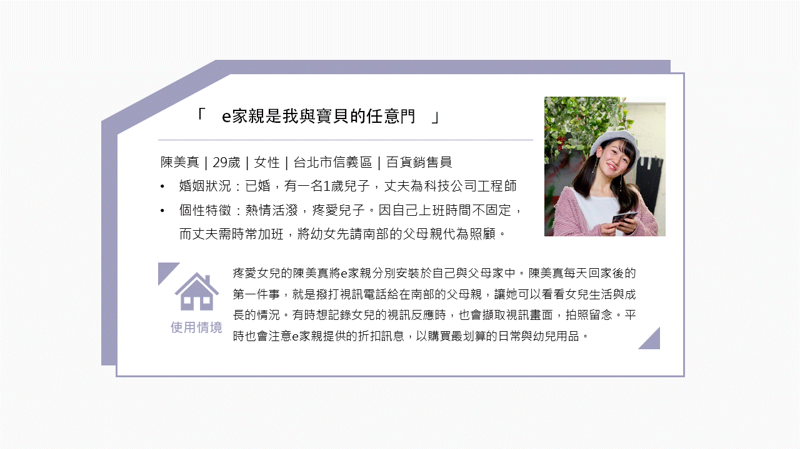
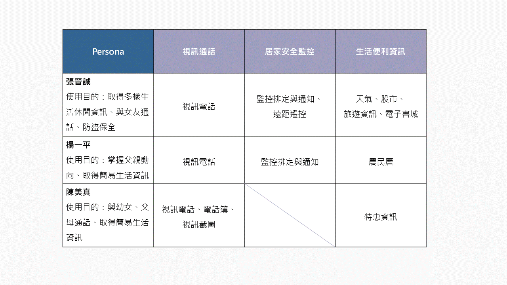
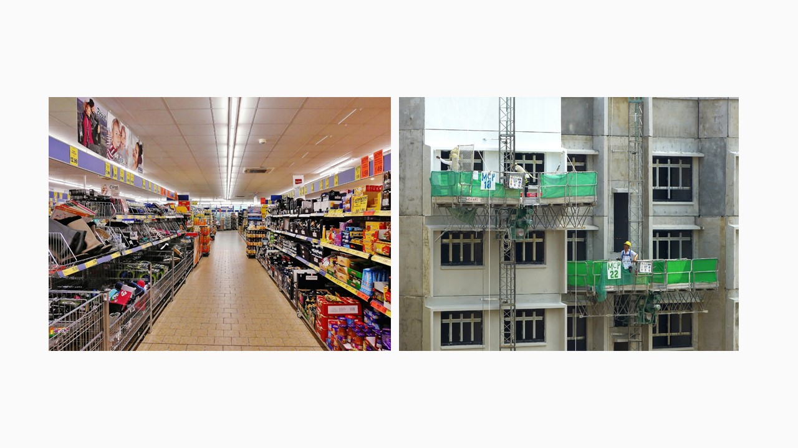

當雲端服務結合物聯網，一般保全系統也能兼具通話、視訊、居家安全監控、及時生活資訊提供與娛樂應用功能，並連結行動裝置，傳送家中即時狀況資訊。產品製造商期待設計出以使用者中心設計（user central design, UCD）為導向之產品，以落實產品User Friendly之目標。因此本專案協助產品製造商進行使用者經驗研究，從產品與服務設計的角度，為產品製造商提供可行的迭代設計建議。
※此專案計畫結果未公開發表，為遵守保密協議，我以模擬產品的方式重新詮釋該計畫之內容，省略並混淆了機密信息，也增加了更多研究員個人的詮釋觀點。
此專案為我第一次參與產學合作之使用者研究案，也是我正式跨入User Experience領域的第一步。在此專案中，我擔任初階研究員，於可使用性測試與焦點團體訪談研究收集資料，並參與研究規劃與資料分析的討論會議。藉由此經驗，我學習到如何在滿足產學雙方的目的與觀點下，設計使用者經驗研究，並瞭解如何使用調查、人物誌（persona）、焦點團體訪、可使用性測試等方法進行研究。
此專案執行分為兩階段產出，並透過不同研究方法的使用，取得多樣性的研究資料，透過多重驗證的方式，整合出高品質的研究結果。
使用族群
使用情況
居家安全監控使用率最高，次之為視訊功能。其他服務功能上，則以天氣、音樂撥放與交通資訊使用頻率較高。
潛在問題
基於焦點團體訪談與固有使用者調查的研究結果，研究團隊以人物誌（Persona）的方法彙整出三種使用者類型，以定義出潛在使用需求與情境。
  本專案根據前述3種典型使用者，發展可使用性測試任務，以對e家親家用智慧電話的各項功能之操作流程與使用性，形成更深入而完整的瞭解。各人物角色之主要測試功能如下：
依據可使用性測試結果，主要潛在問題如下：
體現產品主要價值，安全更容e
居家環境安全防護與視訊為主要需求功能，應設計適當使用情境並加以推廣，讓消費者理解產品價值。同時進行介面設計優化，藉由滿意的使用經驗提升使用價值。
e家親產品能與特殊族群結合，如大廈管委會、社區守護網、安親班、安養院等推廣安全防護的主要服務。
需視使用者特性與使用情境，在安全防護與附加功能上提供更加量身訂製之服務。
加強異業合作，將e家親的使用費用能轉嫁至業者，以拓展使用者族群。同時加強即時客服與客戶關係維護。
委託廠商後續將安全監控產品明確區隔化，並運用在工作與社區環境。
「研究執行團隊自主性高，建立完整且有效的使用者經驗研究。」